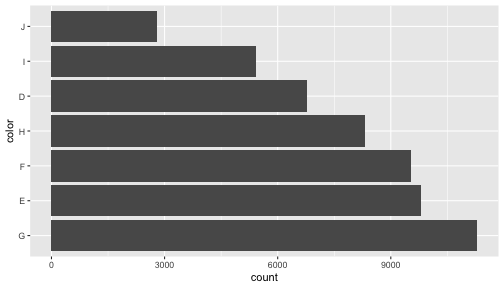

Rによるデータ前処理実習
(Graduate School of Life Sciences, Tohoku University)
R作業を再開する
- 前回作った
***.RprojをダブルクリックしてRStudio起動。
もしくはプロジェクトを新規作成。 - Rスクリプトを新規作成、名前を付けて保存。
getwd(): 現在地を確認。library(): 使いたいパッケージを読み込む。
getwd()
# install.packages("tidyverse")
library(tidyverse)
前処理は大きく2つに分けられる
- データ構造を対象とする処理 (前回の主題)
- 使いたい部分だけ抽出 —
select(),filter() - グループごとに特徴を要約 —
group_by(),summarize() - 大きい順に並べ替え —
arrange() - 異なるテーブルの結合 —
*_join() - 変形: 縦長 ↔ 横広 —
pivot_longer(),pivot_wider()
- 使いたい部分だけ抽出 —
- データ内容を対象とする処理 (👈今回の主題)
- 数値を変換する (e.g., 対数、座標系)
- 変換: 連続変数 ↔ カテゴリカル変数 ↔ ダミー変数
- 欠損値
NAに対処 - 文字列から数値や日時を抜き出す
変数/オブジェクトの型 (先週のおさらい)
NULL: 空っぽ- vector: 基本型。一次元の配列。 (👈今回の主役)
- logical: 論理値 (
TRUEorFALSE) - numeric: 数値 (整数
42Lor 実数3.1416) - character: 文字列 (
"a string") - factor: 因子 (文字列っぽいけど微妙に違う)
- ↑それぞれに欠損値
NAも定義されてる
- logical: 論理値 (
- matrix: 二次元の行列。vector同様、全要素が同じ型。
- list: 異なる型でも詰め込める太っ腹ベクトル。
- data.frame: 同じ長さのベクトルを並べた長方形のテーブル。重要。
tibble とか tbl_df と呼ばれる亜種もあるけどほぼ同じ。
vector: 一次元の配列 (先週のおさらい)
1個の値でもベクトル扱い。
ベクトルの各要素に一気に計算を適用できる。
x = c(1, 2, 9) # 長さ3の数値ベクトル
x + x # 同じ長さ同士の計算
[1] 2 4 18
y = 10 # 長さ1の数値ベクトル
x + y # 長さ3 + 長さ1 = 長さ3 (それぞれ足し算)
[1] 11 12 19
sqrt(x) # square root
[1] 1.000000 1.414214 3.000000
data.frameは列vectorの集まり

内容を変更する方法はいくつかある。
diamonds[["price"]] をドルから円に変換する例:
dia = diamonds # 別名コピー
# dollar演算子で指定
dia$price = 109.58 * dia$price
# 名前を文字列で指定
dia[["price"]] = 109.58 * dia[["price"]]
# dplyr::mutate with pipe
dia = diamonds %>%
mutate(price = 109.58 * price)
1発ならどれでもいい。流れ作業には mutate() が便利。
数値: numeric型
普通は倍精度浮動小数点型 double として扱われる:
answer = 42
typeof(answer)
[1] "double"
明示的に変換したり末尾にLを付けることで整数扱いもできる:
typeof(as.integer(answer))
[1] "integer"
whoami = 24601L
typeof(whoami)
[1] "integer"
様々な数学関数
ベクトルを受け取り、それぞれの要素に適用
x = c(1, 2, 3)
sqrt(x)
[1] 1.000000 1.414214 1.732051
log(x)
[1] 0.0000000 0.6931472 1.0986123
log10(x)
[1] 0.0000000 0.3010300 0.4771213
exp(x)
[1] 2.718282 7.389056 20.085537
https://stat.ethz.ch/R-manual/R-patched/library/base/html/00Index.html
正規化 (z-score normalization)
平均=0、標準偏差=1、になるように:
result = diamonds %>%
mutate(depth = scale(depth)) %>%
print()
carat cut color clarity depth[,1] table price x y z
<dbl> <ord> <ord> <ord> <dbl> <dbl> <int> <dbl> <dbl> <dbl>
1 0.23 Ideal E SI2 -0.1740899 55 326 3.95 3.98 2.43
2 0.21 Premium E SI1 -1.3607259 61 326 3.89 3.84 2.31
3 0.23 Good E VS1 -3.3849872 65 327 4.05 4.07 2.31
4 0.29 Premium I VS2 0.4541292 58 334 4.20 4.23 2.63
--
53937 0.72 Good D SI1 0.9427440 55 2757 5.69 5.75 3.61
53938 0.70 Very Good D SI1 0.7333376 60 2757 5.66 5.68 3.56
53939 0.86 Premium H SI2 -0.5231005 58 2757 6.15 6.12 3.74
53940 0.75 Ideal D SI2 0.3145249 55 2757 5.83 5.87 3.64
depth = (depth - mean(depth)) / sd(depth) と同じ。
正規化 (min-max normalization)
最小=0、最大=1、になるように:
result = diamonds %>%
mutate(depth = (depth - min(depth)) / (max(depth) - min(depth))) %>%
print()
carat cut color clarity depth table price x y z
<dbl> <ord> <ord> <ord> <dbl> <dbl> <int> <dbl> <dbl> <dbl>
1 0.23 Ideal E SI2 0.5138889 55 326 3.95 3.98 2.43
2 0.21 Premium E SI1 0.4666667 61 326 3.89 3.84 2.31
3 0.23 Good E VS1 0.3861111 65 327 4.05 4.07 2.31
4 0.29 Premium I VS2 0.5388889 58 334 4.20 4.23 2.63
--
53937 0.72 Good D SI1 0.5583333 55 2757 5.69 5.75 3.61
53938 0.70 Very Good D SI1 0.5500000 60 2757 5.66 5.68 3.56
53939 0.86 Premium H SI2 0.5000000 58 2757 6.15 6.12 3.74
53940 0.75 Ideal D SI2 0.5333333 55 2757 5.83 5.87 3.64
外れ値の影響を大きく受けることに注意。
外れ値の除去
平均値から標準偏差の3倍以上離れているものを取り除く例:
result = diamonds %>%
filter(abs(depth - mean(depth)) / sd(depth) < 3) %>%
print()
carat cut color clarity depth table price x y z
<dbl> <ord> <ord> <ord> <dbl> <dbl> <int> <dbl> <dbl> <dbl>
1 0.23 Ideal E SI2 61.5 55 326 3.95 3.98 2.43
2 0.21 Premium E SI1 59.8 61 326 3.89 3.84 2.31
3 0.29 Premium I VS2 62.4 58 334 4.20 4.23 2.63
4 0.31 Good J SI2 63.3 58 335 4.34 4.35 2.75
--
53252 0.72 Good D SI1 63.1 55 2757 5.69 5.75 3.61
53253 0.70 Very Good D SI1 62.8 60 2757 5.66 5.68 3.56
53254 0.86 Premium H SI2 61.0 58 2757 6.15 6.12 3.74
53255 0.75 Ideal D SI2 62.2 55 2757 5.83 5.87 3.64
唯一の方法ではないし、そもそもやるべきかどうかも要検討
欠損値の除去 tidyr::drop_na()
(指定した列に) NA が含まれてる行を削除する。
df = tibble(x = c(1, 2, NA), y = c("a", NA, "b"))
df %>% drop_na()
x y
<dbl> <chr>
1 1 a
問: starwars データセットで試してみよう
name height mass hair_color skin_color eye_color birth_year sex gender homeworld species films vehicles starships
<chr> <int> <dbl> <chr> <chr> <chr> <dbl> <chr> <chr> <chr> <chr> <list> <list> <list>
1 Luke Skywalker 172 77 blond fair blue 19.0 male masculine Tatooine Human <chr [5]> <chr [2]> <chr [2]>
2 C-3PO 167 75 <NA> gold yellow 112.0 none masculine Tatooine Droid <chr [6]> <chr [0]> <chr [0]>
3 R2-D2 96 32 <NA> white, blue red 33.0 none masculine Naboo Droid <chr [7]> <chr [0]> <chr [0]>
4 Darth Vader 202 136 none white yellow 41.9 male masculine Tatooine Human <chr [4]> <chr [0]> <chr [1]>
--
84 Poe Dameron NA NA brown light brown NA male masculine <NA> Human <chr [1]> <chr [0]> <chr [1]>
85 BB8 NA NA none none black NA none masculine <NA> Droid <chr [1]> <chr [0]> <chr [0]>
86 Captain Phasma NA NA unknown unknown unknown NA <NA> <NA> <NA> <NA> <chr [1]> <chr [0]> <chr [0]>
87 Padmé Amidala 165 45 brown light brown 46.0 female feminine Naboo Human <chr [3]> <chr [0]> <chr [3]>
欠損値の補完 tidyr::replace_na()
欠損値 NA を任意の値で置き換える。
df = tibble(x = c(1, 2, NA), y = c("a", NA, "b"))
df %>% replace_na(list(x = 0, y = "unknown"))
x y
<dbl> <chr>
1 1 a
2 2 unknown
3 0 b
問: starwars データセットで試してみよう
欠損値の補完 dplyr::coalesce()
先に指定した列が NA なら次の列の値を採用:
y = c(1, 2, NA, NA, 5)
z = c(NA, NA, 3, 4, 5)
coalesce(y, z)
[1] 1 2 3 4 5
型が異なると怒られる:
df = tibble(x = c(1, 2, NA), y = c("a", NA, "b"))
df %>%
mutate(z = coalesce(x, y))
Error: Problem with `mutate()` column `z`.
ℹ `z = coalesce(x, y)`.
✖ Can't combine `..1` <double> and `..2` <character>.
問: starwars データセットで試してみよう
欠損値とみなす dplyr::na_if()
特定の値を NA に置き換える:
df %>%
mutate(x = na_if(x, 1), y = na_if(y, "a"))
x y
<dbl> <chr>
1 NA <NA>
2 2 <NA>
3 NA b
問: starwars データセットで試してみよう
文字列
ダブルクォートで囲む。シングルクォートも使える。
x = "This is a string"
y = 'If I want to include a "quote" inside a string, I use single quotes'
閉じそびれると変な状態になるので、落ち着いて esc or ctrlc
> "This is a string without a closing quote
+
+
+ HELP I'M STUCK
R備え付けの文字列機能は使いにくい
- 何をやる関数なのか名前から分かりにくい
grep,grepl,regexpr,gregexpr,regexec
sub,gsub,substr,substring - 第一引数は対象文字列？検索パターン？関数ごとに違う。
NAに対する挙動が微妙
stringr — 文字列処理パッケージ

文字列基本操作
fruit4 = head(fruit, 4L) %>% print()
[1] "apple" "apricot" "avocado" "banana"
str_length(fruit4) # 長さ
[1] 5 7 7 6
str_sub(fruit4, 2, 4) # 部分列
[1] "ppl" "pri" "voc" "ana"
str_c(1:4, " ", fruit4, "!") # 結合
[1] "1 apple!" "2 apricot!" "3 avocado!" "4 banana!"
パターンマッチング、正規表現
単純な一致だけじゃなく、いろんな条件でマッチングできる:
# aで始まる
str_subset(fruit, "^a")
[1] "apple" "apricot" "avocado"
# rで終わる
str_subset(fruit, "r$")
[1] "bell pepper" "chili pepper" "cucumber" "pear"
# 英数字3-4文字
str_subset(fruit, "^\\w{3,4}$")
[1] "date" "fig" "lime" "nut" "pear" "plum"
正規表現: よく使う特殊文字
| メタ文字 | 意味 | 演算子 | 意味 | |
|---|---|---|---|---|
\d |
数字 | ? |
0回か1回 | |
\s |
空白 | * |
0回以上繰り返し | |
\w |
英数字 | + |
1回以上繰り返し | |
. |
何でも | {n,m} |
n回以上m回以下 | |
^ |
行頭 | XXX(?=YYY) |
YYYに先立つXXX | |
$ |
行末 | (?<=YYY)XXX |
YYYに続くXXX |
R文字列ではバックスラッシュを重ねる必要がある, e.g., "\\d".
\D, \S, W のように大文字にすると反転。
http://userguide.icu-project.org/strings/regexp
問: str_subset(fruit, "PATTERN") をいろいろ試してみよう
検出 str_detect()
マッチするかどうか TRUE/FALSE を返す。
fruit4 = head(fruit, 4L)
str_detect(fruit4, "^a")
[1] TRUE TRUE TRUE FALSE
問: starwars の name 列で filter() してみよう
name height mass hair_color skin_color eye_color birth_year sex gender homeworld species films vehicles starships
<chr> <int> <dbl> <chr> <chr> <chr> <dbl> <chr> <chr> <chr> <chr> <list> <list> <list>
1 Luke Skywalker 172 77 blond fair blue 19.0 male masculine Tatooine Human <chr [5]> <chr [2]> <chr [2]>
2 C-3PO 167 75 <NA> gold yellow 112.0 none masculine Tatooine Droid <chr [6]> <chr [0]> <chr [0]>
3 R2-D2 96 32 <NA> white, blue red 33.0 none masculine Naboo Droid <chr [7]> <chr [0]> <chr [0]>
4 Darth Vader 202 136 none white yellow 41.9 male masculine Tatooine Human <chr [4]> <chr [0]> <chr [1]>
--
84 Poe Dameron NA NA brown light brown NA male masculine <NA> Human <chr [1]> <chr [0]> <chr [1]>
85 BB8 NA NA none none black NA none masculine <NA> Droid <chr [1]> <chr [0]> <chr [0]>
86 Captain Phasma NA NA unknown unknown unknown NA <NA> <NA> <NA> <NA> <chr [1]> <chr [0]> <chr [0]>
87 Padmé Amidala 165 45 brown light brown 46.0 female feminine Naboo Human <chr [3]> <chr [0]> <chr [3]>
抽出 str_extract()
マッチした部分文字列を取り出す。しなかった要素には NA。
fruit4 = head(fruit, 4L)
str_extract(fruit4, "^a..")
[1] "app" "apr" "avo" NA
問: diamonds の clarity 列から数字を取り除いてみよう
carat cut color clarity depth table price x y z
<dbl> <ord> <ord> <ord> <dbl> <dbl> <int> <dbl> <dbl> <dbl>
1 0.23 Ideal E SI2 61.5 55 326 3.95 3.98 2.43
2 0.21 Premium E SI1 59.8 61 326 3.89 3.84 2.31
3 0.23 Good E VS1 56.9 65 327 4.05 4.07 2.31
4 0.29 Premium I VS2 62.4 58 334 4.20 4.23 2.63
--
53937 0.72 Good D SI1 63.1 55 2757 5.69 5.75 3.61
53938 0.70 Very Good D SI1 62.8 60 2757 5.66 5.68 3.56
53939 0.86 Premium H SI2 61.0 58 2757 6.15 6.12 3.74
53940 0.75 Ideal D SI2 62.2 55 2757 5.83 5.87 3.64
置換 str_replace()
カッコ () で囲んだマッチングは後で参照できる:
fruit4 = head(fruit, 4L)
str_replace(fruit4, "..$", "!!")
[1] "app!!" "apric!!" "avoca!!" "bana!!"
str_replace(fruit4, "(..)$", "!!\\1")
[1] "app!!le" "apric!!ot" "avoca!!do" "bana!!na"
問: starwars の name 列の数字を全部ゼロにしてみよう
name height mass hair_color skin_color eye_color birth_year sex gender homeworld species films vehicles starships
<chr> <int> <dbl> <chr> <chr> <chr> <dbl> <chr> <chr> <chr> <chr> <list> <list> <list>
1 Luke Skywalker 172 77 blond fair blue 19.0 male masculine Tatooine Human <chr [5]> <chr [2]> <chr [2]>
2 C-3PO 167 75 <NA> gold yellow 112.0 none masculine Tatooine Droid <chr [6]> <chr [0]> <chr [0]>
3 R2-D2 96 32 <NA> white, blue red 33.0 none masculine Naboo Droid <chr [7]> <chr [0]> <chr [0]>
4 Darth Vader 202 136 none white yellow 41.9 male masculine Tatooine Human <chr [4]> <chr [0]> <chr [1]>
--
84 Poe Dameron NA NA brown light brown NA male masculine <NA> Human <chr [1]> <chr [0]> <chr [1]>
85 BB8 NA NA none none black NA none masculine <NA> Droid <chr [1]> <chr [0]> <chr [0]>
86 Captain Phasma NA NA unknown unknown unknown NA <NA> <NA> <NA> <NA> <chr [1]> <chr [0]> <chr [0]>
87 Padmé Amidala 165 45 brown light brown 46.0 female feminine Naboo Human <chr [3]> <chr [0]> <chr [3]>
形式を変える・整える
fruit4 = head(fruit, 4L)
str_to_upper(fruit4) # 大文字に
[1] "APPLE" "APRICOT" "AVOCADO" "BANANA"
str_pad(fruit4, 8, "left", "_") # 幅を埋める
[1] "___apple" "_apricot" "_avocado" "__banana"
stringi パッケージはさらに多機能
stringi::stri_trans_nfkc("ｶﾀｶﾅ") # 半角カナを全角に
[1] "カタカナ"
文字列から別の型に

これはstringrではなくreadrの担当:
parse_number(c("p = 0.02 *", "N_A = 6e23"))
[1] 2e-02 6e+23
parse_double(c("0.02", "6e23")) # 異物には警告
[1] 2e-02 6e+23
parse_logical(c("1", "true", "0", "false"))
[1] TRUE TRUE FALSE FALSE
parse_date("2019-12-27")
[1] "2019-12-27"
因子型 factor
カテゴリカル変数を扱うための型。文字列っぽいけど中身は数。
iris = tibble::as_tibble(iris) %>% print()
Sepal.Length Sepal.Width Petal.Length Petal.Width Species
<dbl> <dbl> <dbl> <dbl> <fct>
1 5.1 3.5 1.4 0.2 setosa
2 4.9 3.0 1.4 0.2 setosa
3 4.7 3.2 1.3 0.2 setosa
4 4.6 3.1 1.5 0.2 setosa
--
147 6.3 2.5 5.0 1.9 virginica
148 6.5 3.0 5.2 2.0 virginica
149 6.2 3.4 5.4 2.3 virginica
150 5.9 3.0 5.1 1.8 virginica
levels(iris[["Species"]])
[1] "setosa" "versicolor" "virginica"
因子型 factor: 文字列との違い1
取りうる値 (levels) が既知。
typoがあると NA 扱い。
month_levels = c(
"Jan", "Feb", "Mar", "Apr", "May", "Jun",
"Jul", "Aug", "Sep", "Oct", "Nov", "Dec"
)
x2 = c("Dec", "Apr", "Jam", "Mar")
factor(x2, levels = month_levels)
[1] Dec Apr <NA> Mar
Levels: Jan Feb Mar Apr May Jun Jul Aug Sep Oct Nov Dec
因子型 factor: 文字列との違い2
順序がある。
文字列をソートすると当然アルファベット順になるけど、
因子型にはそうじゃない順序を持たせられる:
x1 = c("Dec", "Apr", "Jan", "Mar")
sort(x1)
[1] "Apr" "Dec" "Jan" "Mar"
y1 = factor(x1, levels = month_levels)
as.integer(y1)
[1] 12 4 1 3
因子型 factor: 順序の情報は作図で生きる
文字列ならアルファベット順、因子型なら任意指定可能。
頻度順にする例:
diamonds %>%
mutate(color = fct_infreq(color)) %>%
ggplot(aes(x = color)) +
geom_bar() + coord_flip()

tidyverse の因子型担当は forcats

fct_reorder(): 別の変数に応じて順序を並べ替えfct_infreq(): 頻度に応じて順序を並べ替えfct_relevel(): すべて手動で再設定fct_lump(): 少なすぎるカテゴリを"その他"としてまとめる
ダミー変数に変換
イチゼロの値を持たせて横広に変形するのと等価。
iris %>%
rowid_to_column() %>% select(-starts_with("Sepal")) %>%
mutate(value = 1L) %>%
pivot_wider(names_from = Species, values_from = value, values_fill = c(value = 0L))
rowid Petal.Length Petal.Width setosa versicolor virginica
<int> <dbl> <dbl> <int> <int> <int>
1 1 1.4 0.2 1 0 0
2 2 1.4 0.2 1 0 0
3 3 1.3 0.2 1 0 0
4 4 1.5 0.2 1 0 0
--
147 147 5.0 1.9 0 0 1
148 148 5.2 2.0 0 0 1
149 149 5.4 2.3 0 0 1
150 150 5.1 1.8 0 0 1
問: これの逆向きをやってみよう
日時型: POSIXct, POSIXlt
- POSIXct: エポックからの経過秒数。比較や差分などを取りやすい。
- POSIXlt: list(年, 月, 日, 時, 分, 秒)。単位ごとに抜き出しやすい。
now = "2019-12-27 13:00:00"
ct = as.POSIXct(now)
unclass(ct)
[1] 1577419200
attr(,"tzone")
[1] ""
lt = as.POSIXlt(now)
unclass(lt) %>% as_tibble()
sec min hour mday mon year wday yday isdst zone gmtoff
<dbl> <int> <int> <int> <int> <int> <int> <int> <int> <chr> <int>
1 0 0 13 27 11 119 5 360 0 JST NA
素のRでも扱えるけど lubridate パッケージを使うともっと楽に。
lubridate — 日時型処理パッケージ

日時型への変換:
today = ymd(20191227)
ymd(c("20191227", "2019-12-27", "19/12/27"))
[1] "2019-12-27" "2019-12-27" "2019-12-27"
日時型から単位ごとに値を取得:
month(today)
[1] 12
wday(today, label = TRUE)
[1] Fri
Levels: Sun < Mon < Tue < Wed < Thu < Fri < Sat
本日前半のまとめ
- vectorには型がある: 文字列、数値、因子、日時、etc.
- 大概の操作はvector全体に一括適用
- 文字列を扱うには stringr
- 正規表現は強力・汎用的
- 因子を扱うには forcats
- 知っておくと作図で有利
- 日時を扱うには lubridate
各パッケージのチートシート.pdfを手元に持っておくと便利。
Reference
- R for Data Science — Hadley Wickham & Garrett Grolemund
- Website, Book
- 日本語版書籍(Rではじめるデータサイエンス)
RユーザのためのRStudio[実践]入門 — 松村優哉ほか
前処理大全 — 本橋智光
- 過去の講義資料
- 「Rにやらせて楽しよう — データの可視化と下ごしらえ」 岩嵜航 2018
- 「Rを用いたデータ解析の基礎と応用」石川由希 2019 名古屋大学
- 「Hands-on R Lecture for Makino Lab」 岩嵜航 2019 東北大学
- Official documents:
- tidyverse, dplyr, tidyr, tibble, readr, stringr, forcats lubridate